This article shows the plotting functions in mcp:
plot() for fitted values and predictions,
plot_dpar() for distributional parameters,
plot_pars() for parameters, and pp_check() for
posterior predictive checks. All of them return ggplot2
objects, so they can be extended with regular ggplot2 code.
The last section shows how to make your own plots from the same building
blocks that plot() uses.
We use the bundled demo_fit, which is a three-segment
model of the “demo” dataset:
## List of 3
## $ response ~ 1
## $ ~0 + time
## $ ~1 + timeThe default plot
plot(demo_fit)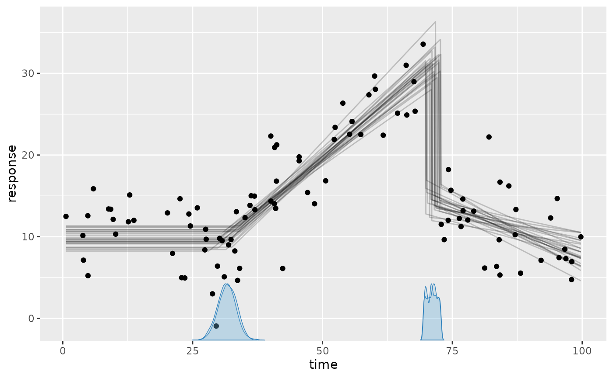
This shows:
- The black dots are the data.
- The gray lines are 25 joint posterior draws of the fitted values (expected response).
- The blue curves on the x-axis are the posterior densities of the change points, one per chain.
Tweaking the plot
Showcasing some common arguments:
set.seed(42) # Make lines replicable
plot(
demo_fit,
lines = 50, # more fitted lines. Hide using `lines = 0`
interval = c(
"fitted", # Show posterior fitted (red) interval
"predict" # Show posterior predictive (green) intervals
),
width = 0.8, # Interval width
cp_dens = FALSE # Hide change point densities
)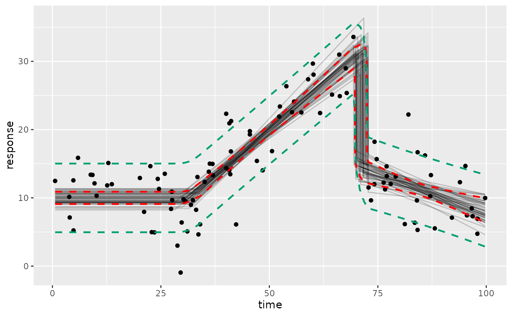
Here, the intervals are computed using ndraws = 500
draws by default. Set ndraws = NULL to use all draws, which
reduces Monte Carlo error at the cost of speed. For other quantiles, see
making your own plots below.
Use geom_data = "line" for time series or
geom_data = FALSE to hide the data.
Since the plots are ggplot2 objects, you can add themes,
labels, etc.:
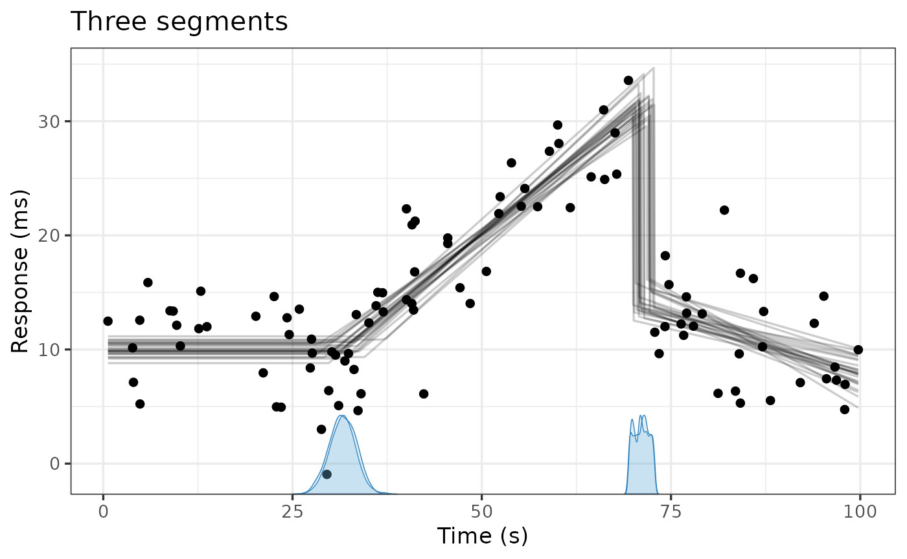
Prior predictive
Use prior = TRUE to see the prior predictive instead.
This is a quick way to check what your priors imply when “put through”
the model:
plot(demo_fit, prior = TRUE, lines = 100)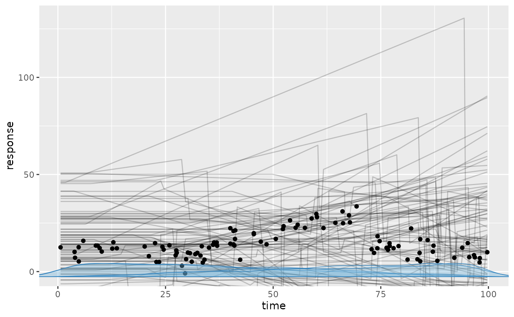
Categorical predictors, groups, and other predictors
In models with a categorical predictor, plot() draws a
curve for each level and colors them automatically. Here, we use the
“multiple” example, which has a categorical predictor
(state) and a continuous predictor (z) in
addition to the change-point variable (x):
fit = mcp_example("multiple", plot = FALSE)
fit$model## List of 3
## $ y ~ 1 + x:state + z
## $ ~1 + x + state
## $ ~0 + I(x^2) + same(state)
plot(fit)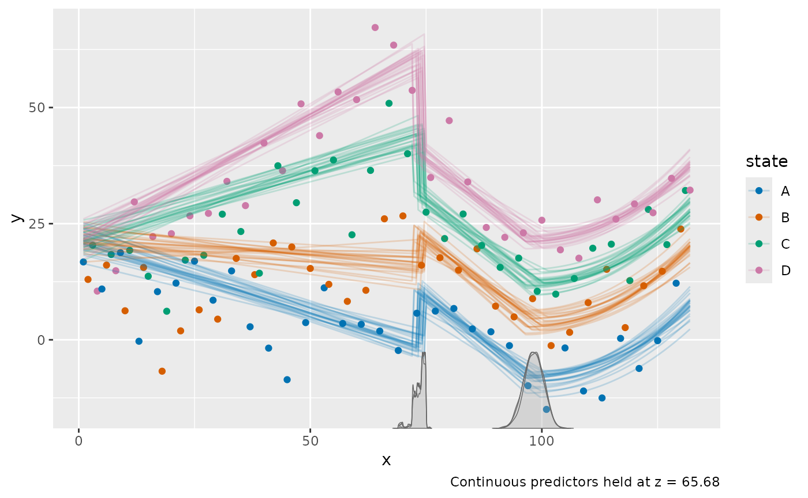
Use color_by and facet_by to choose which
categorical predictors or grouping columns to map to color and facets.
For example, plot(fit, facet_by = "state") shows each state
in a separate panel. With several categorical predictors, all of them
must be identified by either color or facets, unless you set
color_by = NULL.
Additional continuous predictors (z here) are held at
their observed mean, as stated in the plot caption. Use at
to evaluate at other values:
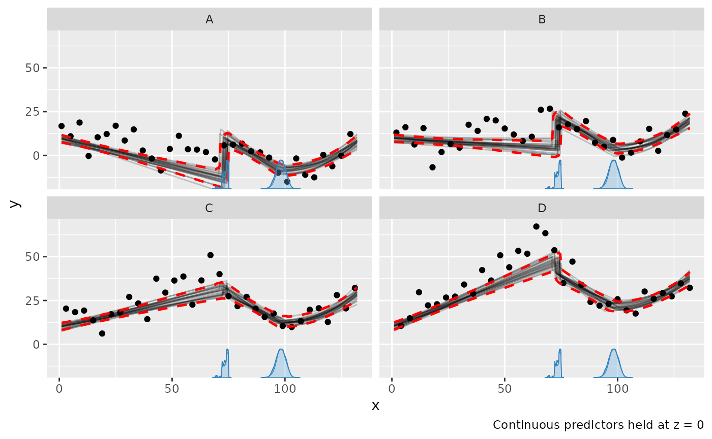
Note that the data points are not adjusted, so they are shown at
their observed z.
For group-level effects,
use facet_by to show the group-specific curves, e.g.,
plot(fit, facet_by = "id") for a model with
(1 | id). Without it, the population-level curve is
shown.
Scales
Use scale = "linear" to plot on the scale of the linear
predictor, e.g., the log-odds for binomial() models. For
binomial() and bernoulli() models,
plot() shows success proportions by default; set
rate = FALSE to show counts (see the binomial article).
Distributional parameters
plot_dpar() plots a distributional parameter, such as
sigma, along the change-point variable. It takes most of
the same arguments as plot(), but only
interval = "fitted". Here, we use the “sigma” example,
where the residual standard deviation changes at both change points:
fit_sigma = mcp_example("sigma", plot = FALSE)
fit_sigma$model## List of 3
## $ y ~ 1
## $ ~0 + sigma(1 + x)
## $ ~0 + x
plot_dpar(fit_sigma, dpar = "sigma", interval = "fitted")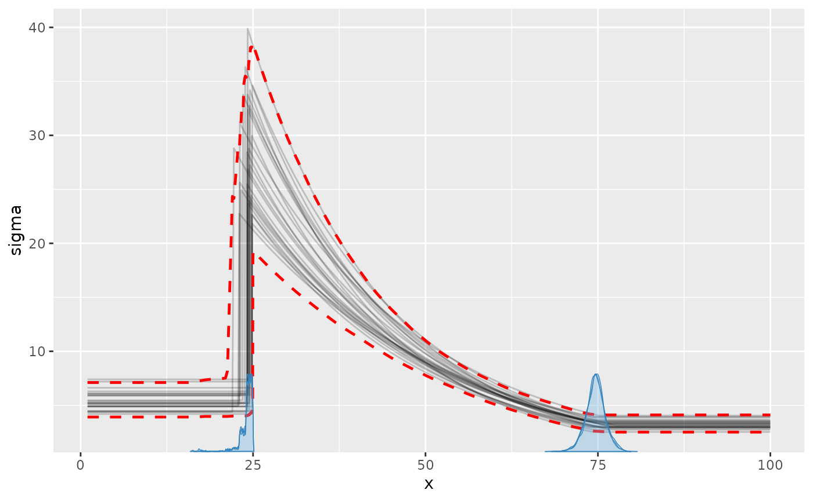
The posterior predictive interval in plot() shows the
same change in sigma on the scale of the data:
plot(fit_sigma, interval = "predict")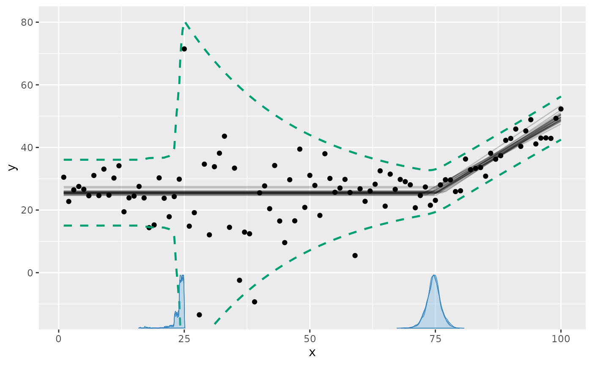
Other distributional parameters, e.g., "ar1" or
"shape", are plotted the same way. Read more about modeling distributional
parameters.
Parameters
plot_pars() plots the posterior (or prior with
prior = TRUE) of parameters using bayesplot.
The default is a “combo” of densities and trace plots, which is useful
for checking convergence:
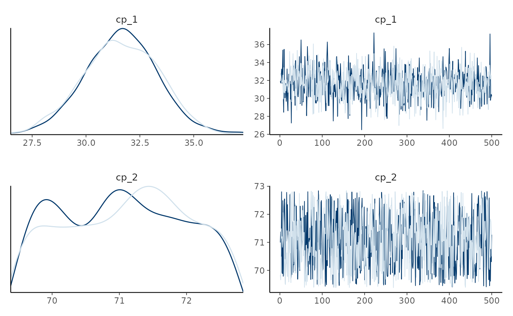
Use type to choose other bayesplot::mcmc_*
plots, e.g., type = "dens_overlay",
type = "trace", or type = "hex" (for the joint
distribution of two parameters). pars = "population"
(default) selects all population-level parameters and
pars = "group" selects all group-level deviations;
regex_pars selects parameters by name.
Posterior predictive checks
pp_check() compares the data to responses simulated from
the posterior using bayesplot::ppc_*:
pp_check(demo_fit)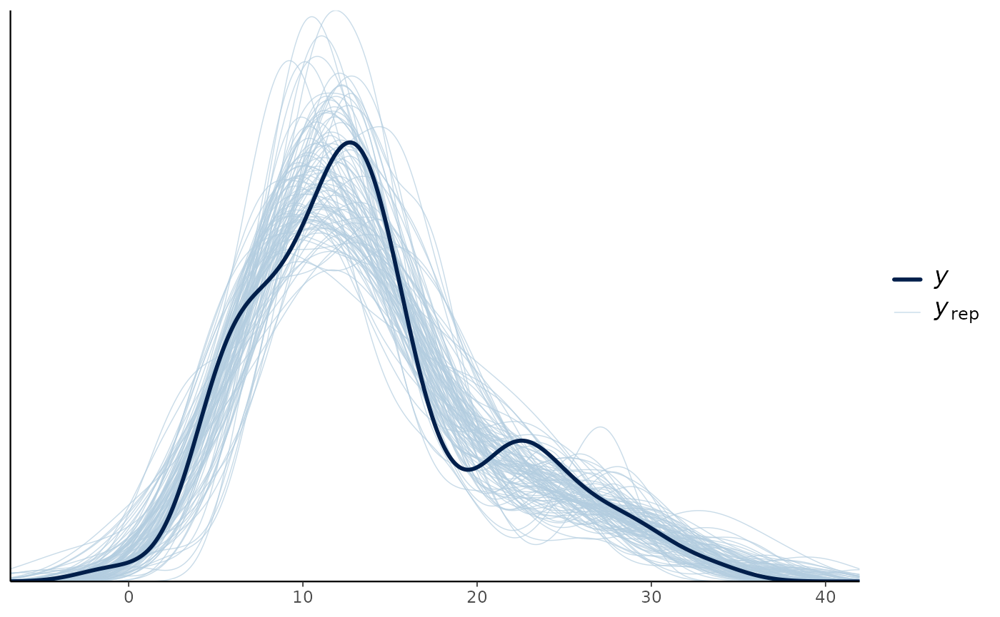
Use type for other checks, e.g.,
pp_check(fit, type = "ecdf_overlay"). Use
facet_by to make a panel for each level of a categorical
predictor or grouping column, e.g., for each state in the
“multiple” example from above:
pp_check(fit, facet_by = "state")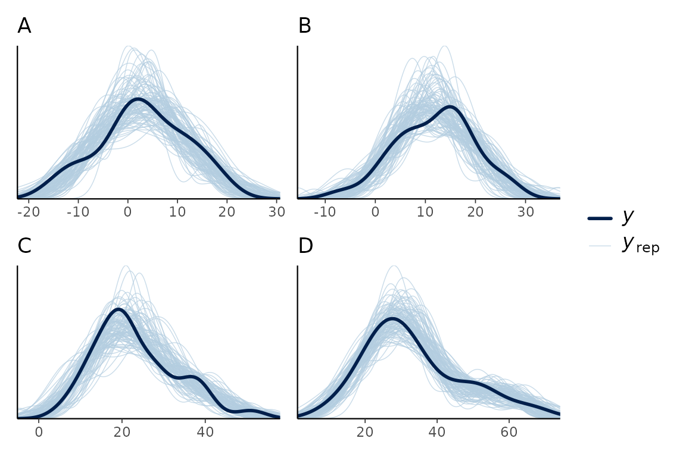
Making your own plots
plot() evaluates fitted() and
predict() on an x-grid made by
interpolate_newdata(). This grid has extra resolution
around the change points, all combinations of categorical predictor
levels, and additional continuous predictors held at their observed
means (or at at). You can use the same building blocks to
make any plot you want:
newdata = interpolate_newdata(demo_fit)
head(newdata)## # A tibble: 6 × 1
## time
## <dbl>
## 1 0.619
## 2 1.62
## 3 2.62
## 4 3.62
## 5 4.62
## 6 5.62For example, below is a ribbon of the 95% central interval of the
fitted values. In addition, a quantile (median) is added using
summary = FALSE and a “manual” summary.
# Fitted and intervals
fitted_summary = fitted(demo_fit, newdata = newdata)
# A custom quantile (here median)
fitted_median = fitted(demo_fit, newdata = newdata, summary = FALSE) |>
dplyr::summarise(.epred = median(.epred), .by = time)
# Plot!
ggplot(fitted_summary, aes(x = time, y = .mean)) +
geom_ribbon(aes(ymin = .lower, ymax = .upper), alpha = 0.3) +
geom_line(linewidth = 1) +
geom_line(aes(y = .epred), data = fitted_median, color = "red") +
geom_point(aes(y = response), data = demo_fit$data)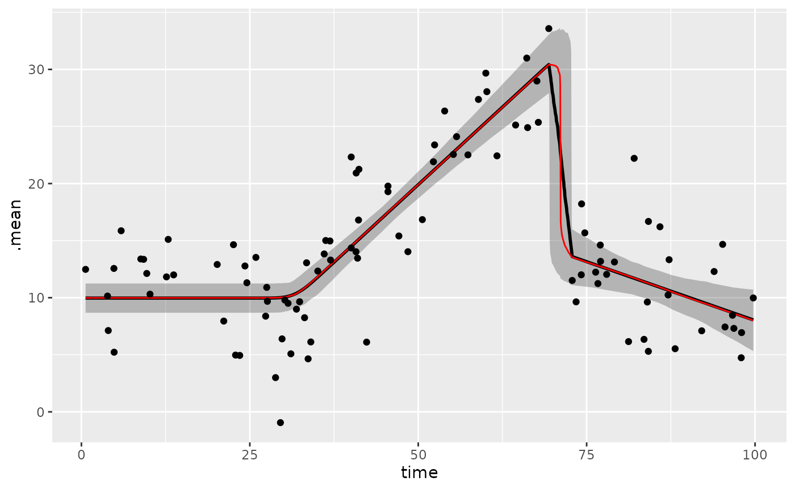
You can add the same layer to plot(), e.g.,
plot(demo_fit) + geom_line(aes(x = time, y = .epred), data = fitted_median, inherit.aes = FALSE).
inherit.aes = FALSE is needed because plot()
maps internal columns that are not in fitted_median.
The draws follow tidybayes conventions
(.draw, .epred, .prediction), so
you can also use tidybayes and ggdist to
summarise and plot them, e.g., multiple interval widths:
library(tidybayes)
predict(demo_fit, newdata = newdata, summary = FALSE) |>
ggplot(aes(x = time, y = .prediction)) +
stat_lineribbon(.width = c(0.5, 0.8, 0.95), alpha = 0.5) +
geom_point(aes(y = response), data = demo_fit$data) +
scale_fill_brewer()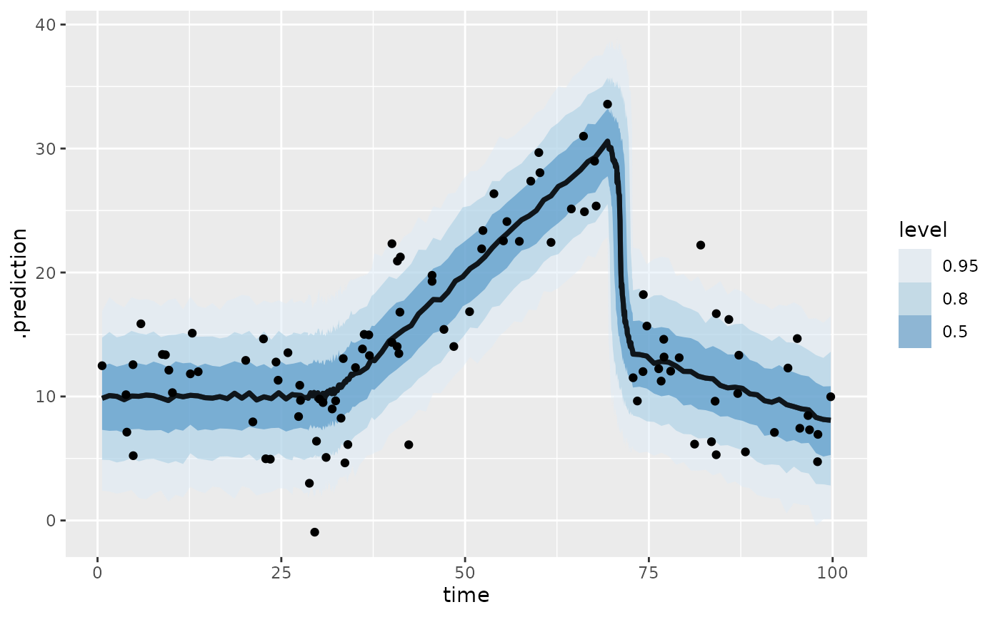
See also the fits and predictions
article for out-of-sample predictions and forecasting with future
change points, and the missing
responses article for adding imputations to plot().